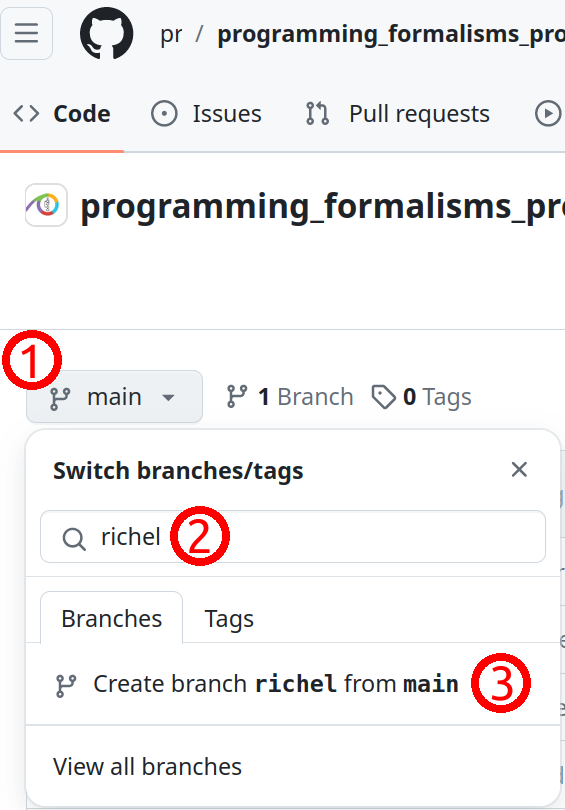
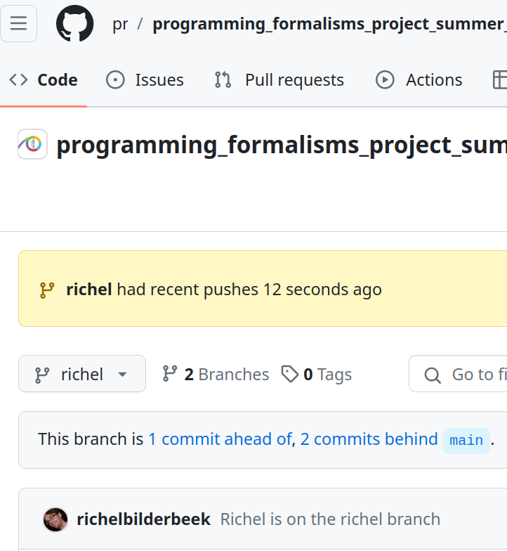
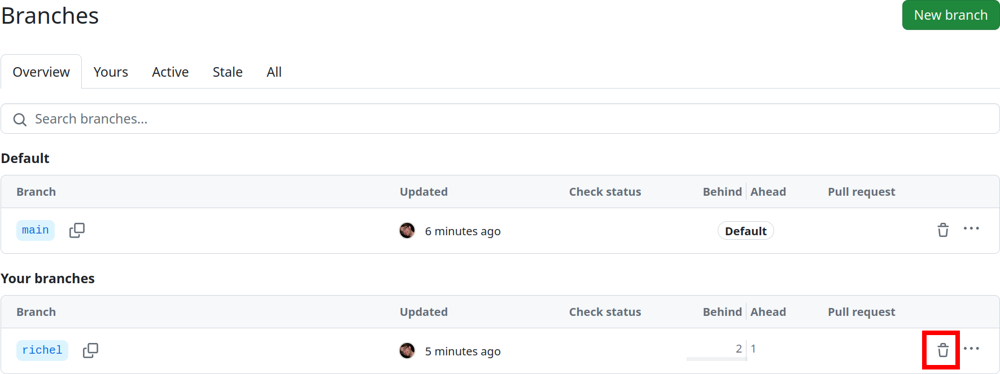
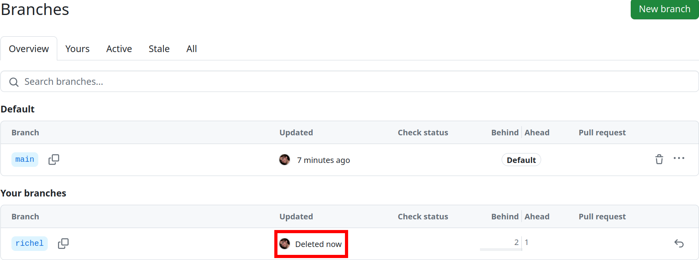

Apply merge¶
Learning objectives
- practice doing Pull Requests using the GitHub interface
- practice doing a code review
- practice fixing merge conflicts on GitHub
- practice merging branches using the command-line interface
- practice fixing merge conflicts on local computer, using the command-line interface
For teachers
Teaching goals are:
- Learners have practiced doing Pull Requests using the GitHub interface
- Learners have practiced doing a code review
- Learners have practiced fixing merge conflicts on GitHub
- Learners have practiced merging branches using the command-line interface
- Learners have practiced fixing merge conflicts on local computer, using the command-line interface
gantt
title Lesson plan apply merge
dateFormat X
axisFormat %s
Introduction: intro, 0, 5s
Theory 1: theory_1, after intro, 5s
Exercise 1: crit, exercise_1, after theory_1, 40s
Feedback 1: feedback_1, after exercise_1, 10sPrior questions:
- What does a merge do?
- What does a merge do?
- Do we need merging? When? Why?
- When does a merge give a merge conflict?
- Can a
git commitresult in a merge conflict? Why? - Can a
git pushresult in a merge conflict? Why? - Can a
git pullresult in a merge conflict? Why?
Branches, merging, code reviews¶
Branches allow us to work independently. Here we use branches to do so.
However, when we merge branches, it may result in a merge conflict. A merge conflict occurs when git is unsure how to merge branches and asks a human for help. Here we create merge conflicts on trivial code.
One can suggest to merge branches on GitHub, where it is called a Pull Request. For a Pull Request, a team member can be asked for a code review. Code reviews are useful for many reasons, among others the spread of knowledge.
One can merge branches locally, using the command-line. This will bypass code review and that is OK. For example, merging develop to your topic branch does not need a code review.
Exercises¶
Exercises 1 and 2 use the GitHub interface, which is graphical and easy to use. It should help you get acquainted to branches, Pull Requests and code review.
Exercises 3 and 4 use the command line instead to achieve similar goals. It should help you get acquainted to working with git on the command-line.
Exercise 5 is a repeat of doing a code review.
Exercise 1: practice merging git branches using the GitHub interface¶
Learning objectives
- practice merging git branches without a merge conflict
gitGraph
commit id: "Stuff on main"
branch develop
checkout develop
commit id: "Stuff on develop"
branch anna
checkout anna
commit id: "Some work"
commit id: "Branching version"
branch bertil
checkout bertil
commit id: "Modify my file"
checkout anna
merge bertil
commit id: "Another commit"
checkout develop
merge anna- You work in a pair or trio
- On GitHub, create a branch for person A, e.g.
annathat branches off fromdevelop - On GitHub, use the branch of person A and create a new commit. Use the web interface or command-line.
- On GitHub, create a branch for person B, e.g.
bertilthat branches off fromanna - On GitHub, use the branch of person B and create a new commit. Use the web interface or command-line.
- On GitHub, use web interface to create a Pull Request from
bertiltoanna. The person that does this requests a reviewer. - On GitHub, the other person approves the Pull Request and merges
- On GitHub, use web interface to create a Pull Request from
annatodevelop. The person that does this requests a reviewer. If there is a merge conflict, either stop (you've done the exercise, well done!) or fix the merge conflict - On GitHub, the other person approves the Pull Request and merges
Exercise 2: practice merging git branches using the GitHub interface¶
Learning objectives
- practice merging git branches with a merge conflict using the GitHub interface
gitGraph
commit id: "Stuff on main"
branch develop
checkout develop
commit id: "Stuff on develop"
branch anna
branch bertil
checkout anna
commit id: "Modify a file"
checkout bertil
commit id: "Modify the same file"
checkout anna
merge bertil
checkout develop
merge anna- You work in a pair or trio
- On GitHub, create a branch for person A, e.g.
annathat branches off fromdevelop - On GitHub, create a branch for person B, e.g.
bertilthat branches off fromanna - On GitHub, use the branch of person A and create a new commit in a file Use the web interface or command-line.
- On GitHub, use the branch of person B and create a new commit in the same place in the same (now outdated) file Use the web interface or command-line.
- On GitHub, use web interface to create a Pull Request from
bertiltoanna. The person that does this requests a reviewer. There is a warning for a merge conflict! - On GitHub, the other person fixes the merge conflict, approves the Pull Request and merges
- On GitHub, use web interface to create a Pull Request from
annatodevelop. The person that does this requests a reviewer. - On GitHub, the other person approves the Pull Request and merges
Extra exercise 3: practice merging git branches using the command-line¶
Learning objectives
- practice merging git branches without a merge conflict
Here we use the main branch for now
Instead of updating this exercise, its answer and video
to use a proper branching workflow, we branch from main
in this exercise
gitGraph
commit id: "Before start"
commit id: "Branching version"
branch sven
checkout sven
commit id: "Modify my file"
checkout main
merge sven
commit id: "Another commit"- For our GitHub repo, create a branch with your first name that is
unique, e.g.
sven,sven_svenssonorsven_svensson_314. You may branch of frommainordevelop(if it exists). You may use the web interface (easiest!) or use the command line - On your local computer:
- update your repository
- switch to that branch
- change the repo
- push your changes online
- Verify the changes are online
- On your local computer
- switch to the
mainbranch - merge your topic branch to
main - upload your changes
- switch to the
- Delete your topic branch (i.e. the one with the unique name). You may use the web interface (easiest!) or use the command line
- On your local computer, update your code
Answers

Click on 1, type your branch name at 2 (in this case, richel), then click 3.
Done!
- On your local computer:
- update the repository
On your local computer, navigate to the folder of the shared project and update:
- On your local computer:
- switch to the new branch
Switch to the new branch, for example, richel, by doing:
- On your local computer:
- change the content of the repository, for example, by creating a file in
learners/[your_name]/[your_name]_is_on_[your_branch_name]
This can be any change you'd like. To create a file under Linux (and maybe this works on other operating systems too), one can do:
After the change, commit these:
- On your local computer:
- push your changes online.
Do:
And your code may end up online.
If that does not work, do:
and try pushing again, maybe multiple times, as many people are pushing to the shared repo.
- On GitHub, verify that your changes on your branch can be found online

Make sure you look at the correct branch, as displayed at 1. Then your commit message shows up at 2.
- On your local computer
- switch to the
mainbranch
- On your local computer
- merge your topic branch to
main
- On your local computer
- upload your changes
- Delete your branch (i.e. the one with the unique name). You may use the web interface (easiest!) or use the command line
{kind=link}
Click on 'Branches', as shown in the image above.

Click on garbage bin, as shown in the image above.

The branch will now be deleted, as shown in the image above.
- On your local computer, update your code
Do:
Prefer a video?
You can find a video here
Extra exercise 4: practice merge conflicts between branches using the command line¶
Learning objectives
- experience merge conflicts between branches
- fix merge conflicts between branches
Here we use the main branch for now
Instead of updating this exercise, its answer and video
to use a proper branching workflow, we branch from main
in this exercise
gitGraph
commit id: "Before start"
commit id: "Branching version"
branch anna
checkout anna
commit id: "Modify the file"
checkout main
checkout main
commit id: "Modify the file too"
checkout main
merge anna
commit id: "End"An example picture of how to create a merge conflict.
- Create a merge conflict between two branches, e.g. a topic branch and the main branch. You can do so by creating random commits on both branches and merge. Alternatively, the figure above shows the minimal git branching history to do so.
Answers
Here, I will replay the figure above
- in GitHub, create a branch called
anna - on your local computer,
git pull, thengit checkout anna - on your local computer, modify a file, e.g. add the line
Anna was hereat the bottom ofREADME.md. Then dogit add .,git commit -m "Anna was here"andgit push. Do not merge braches yet, else there will be no merge conflicts! - on your local computer,
git checkout main - on your local computer, modify a file, e.g. add the line
main person was here. Then dogit add .,git commit -m "main person was here"andgit push. - To generate the merge conflict, merge
annaintomain, usinggit merge main. You will get a clear error :-) - Modify the file to have the texts merged.
Then do
git add .,git commit -m "Fixed merge conflict"andgit push.
Enjoy a video?
You can find a video here
Extra exercise 5: practice code review¶
For team member A:
- Create a topic branch (from
develop) - Do something trivial on that topic branch
- Submit a GitHub Pull Request to merge it to
develop - Assign the other team member as the reviewer
- Do a pretend code review until the Pull Request is accepted
- The reviewer merges the code to
develop
Now do the same for team member B.
Enjoy a video?
You can find a video here